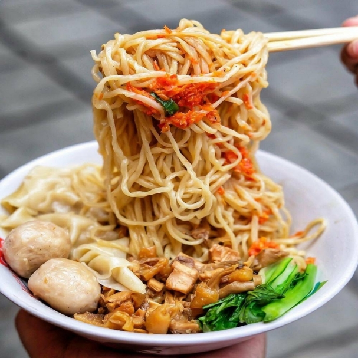
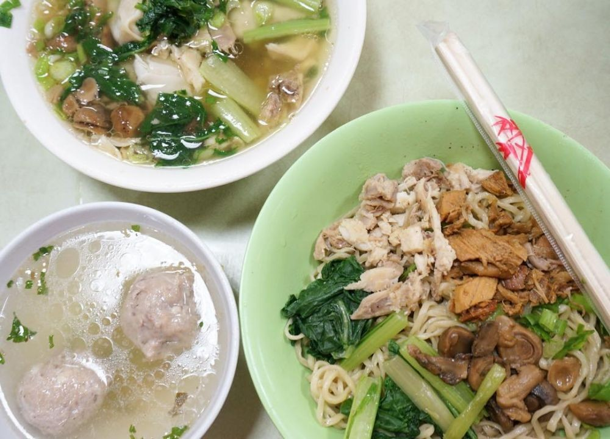
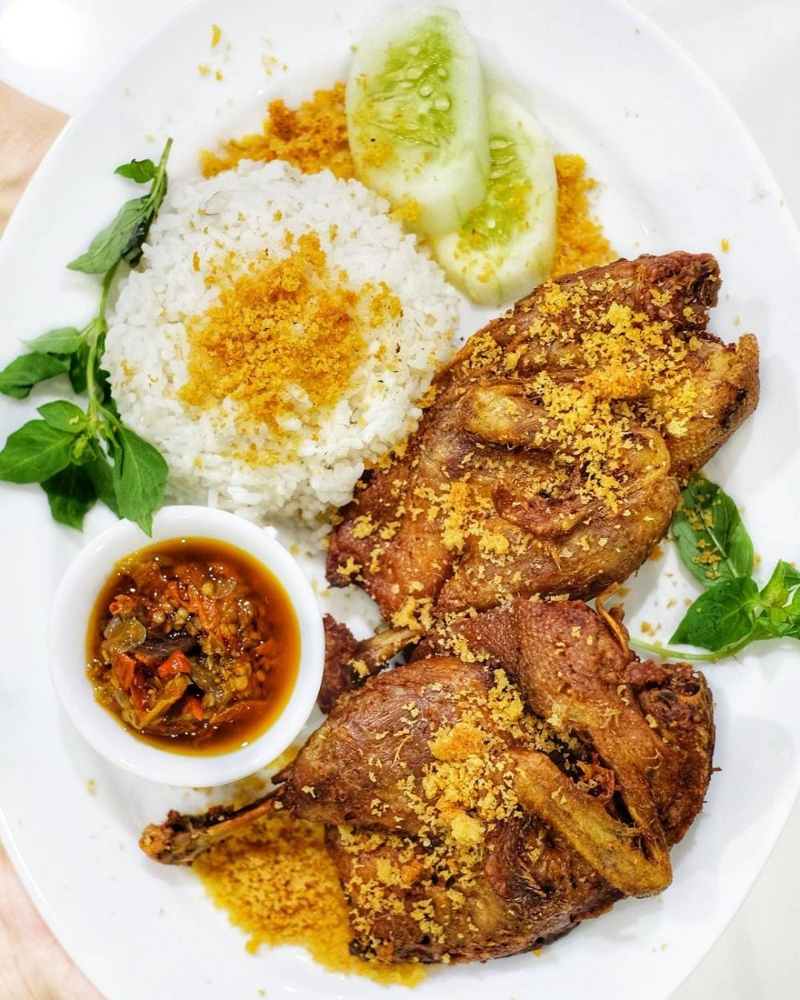

Rekomendasi Tempat Kuliner Terbaik Di Jakarta

1. Mie Ayam Gondangdia
Kuliner Jakarta pertama yang harus dikunjungi adalah Mie Ayam Gondangdia. Gak cuma mie ayam, ada menu lainnya yang bisa dicoba. Harganya berkisar dari Rp20 ribu hingga Rp50 ribu.
Walaupun bukan tempat kekinian, Mie Ayam Gondangdia selalu ramai pengunjung.
Alamat: Jalan Cikini IV Nomor 12A, Jakarta Pusat.

2. Bakmi Gang Kelinci
Pecinta mie wajib banget cobain Bakmi Gang Kelinci. Bakmi ini sangat cocok bagi mulut remaja hingga dewasa. Cabangnya banyak, total ada 11 cabang yang tersebar di seluruh wilayah Jakarta. Menunya beragam, tapi yang paling favorit adalah bakmi spesial dengan harga Rp27 ribu. Buka selama pukul 07.00-21.00.
Alamat: Jalan Kelinci Raya Nomor 1-3, Jakarta Pusat.

3. Bebek Kaleyo
Sesuai namanya, menu andalan di sini bebek gorengnya. Bebek goreng utuh dibanderol dengan harga sekitar Rp50 ribu untuk empat orang. Gak cuma bebek goreng, ada juga olahan bebek lainnya yang gak kalah mantap.
Jam buka setiap cabang berbeda, tapi yang pasti Bebek Kaleyo tutup setiap Minggu. Jangan sampai salah ya!
Alamat: Jalan Cempaka Putih Raya 108, Jakarta Pusat.